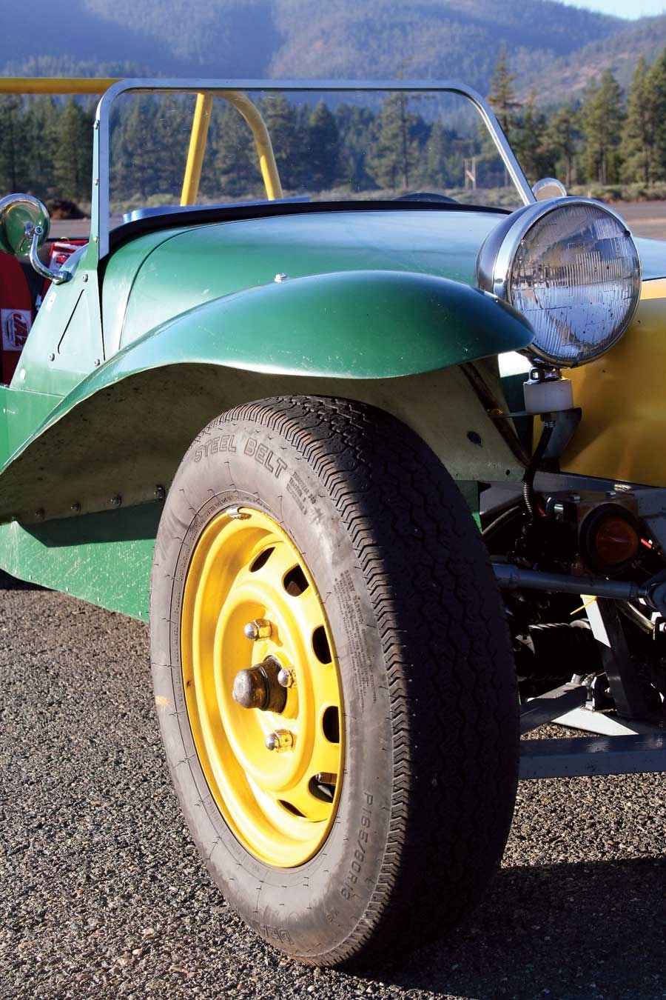
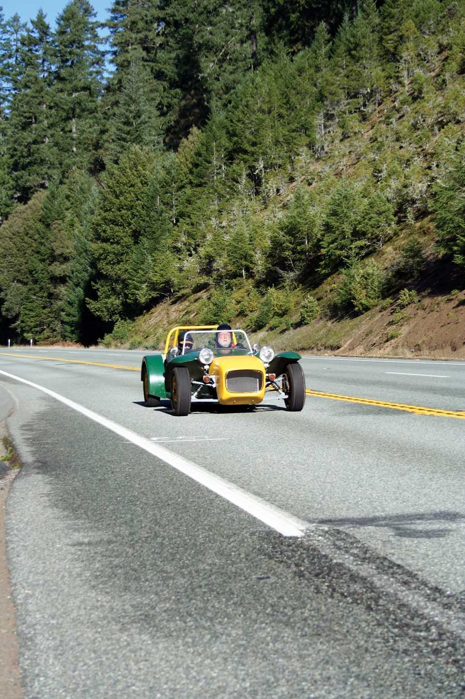
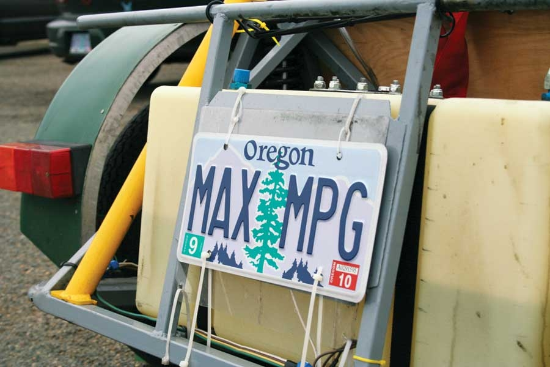
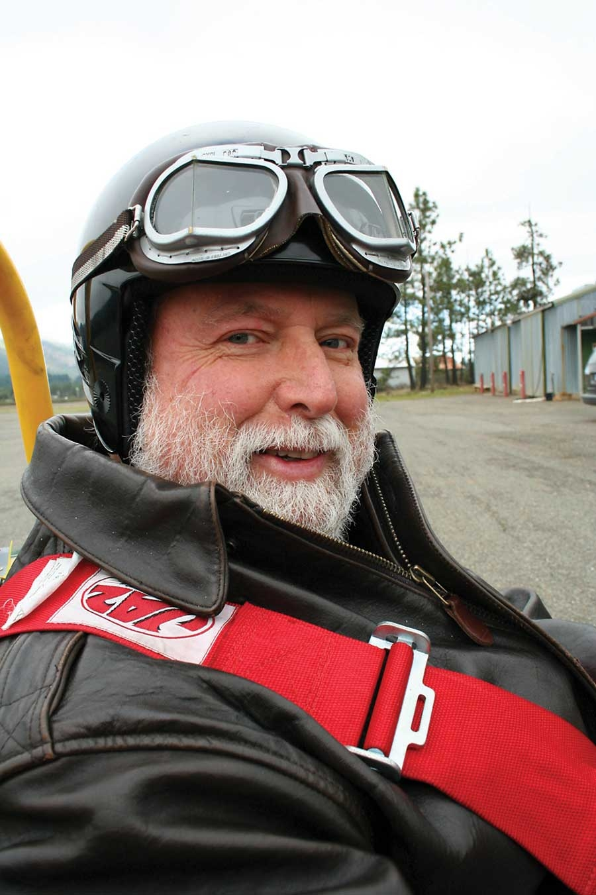
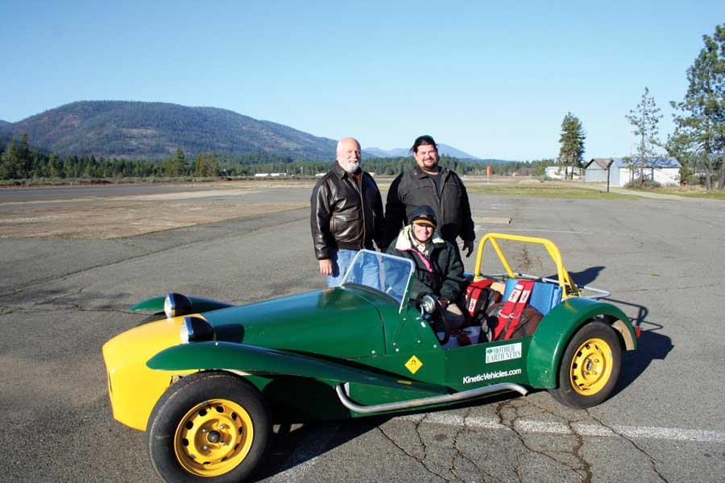
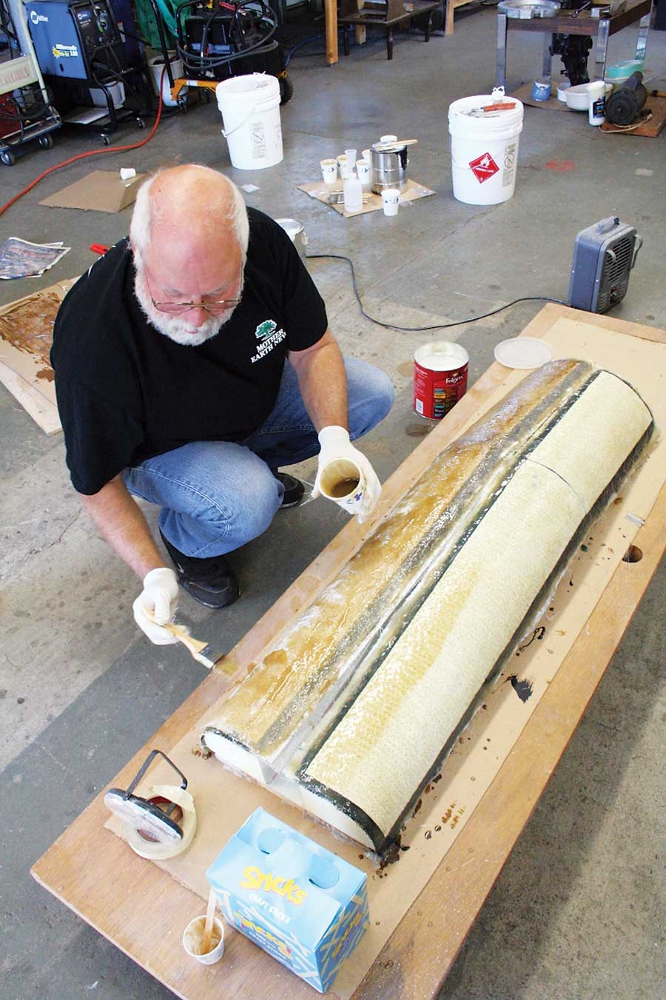
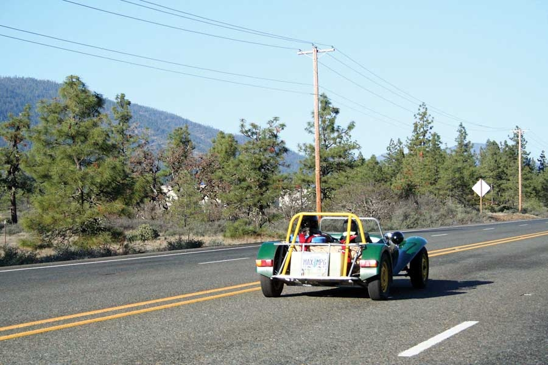
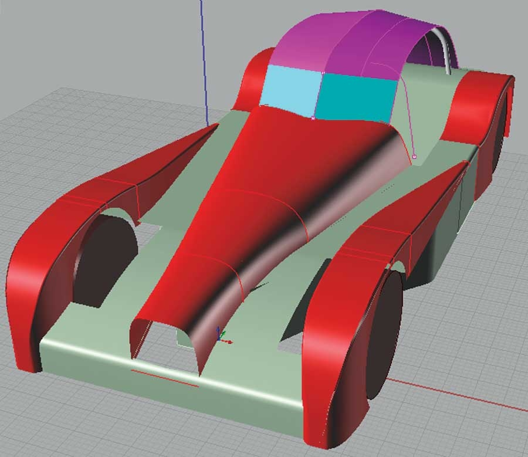

Last year we introduced MAX, Mother Earth News’ contender in the Auto X Prize fuel-efficient car competition (see Here Comes the 100-mpg Car). For those who may have just tuned in, the Progressive Insurance Automotive X Prize is a $10 million competition to create cars capable of 100 miles per gallon fuel economy. Entries must have a design that would allow for the production of 10,000 cars per year at the price most appealing to the manufacturer’s stockholders. We’re aiming for a more affordable approach: a DIY, fuel-efficient car that you can build for about $10,000.
Part of what I want to prove with MAX is that if I can build a 100-mpg car using off-the-shelf technology, the major automakers should be able to do the same, if not even better. Sure, MAX is different than a family sedan, but those car companies also have different resources than we do here in the Kinetic Vehicles garage. After MAX has been perfected - whether we hit 100 mpg or not - we will have plans available for those who want to build their own.
MAX is a sports car powered by a Kubota diesel engine that’s normally used in tractors. The car has turned heads and drawn crowds everywhere we’ve gone, and shown its heels to far zootier vehicles in everything from “play dates” on the twisty roads of southern Oregon to formal endurance racing from Berkeley, Calif., to Las Vegas (see MAX Wins 800-mile Race, without Gas).
You may be wondering whether MAX is practical. Well, we have more than 7,000 miles on its wheels now - everything from grocery getting to freeway flying - and it has served us reliably. For fuel, we’ve used everything from jet fuel to olive oil.
I bet I know your next question: Is MAX getting 100 mpg? Not yet. But so far we have the chassis and power source sorted out, so now we can improve MAX’s body, which will really improve its mpg.
The only thing holding us back from 100 mpg is air resistance. MAX’s current body looks cool and classic, but it’s an aerodynamic disaster. We’ll never see 100 mpg with this design. Frankly, it’s a bit amazing we’ve been nipping at 70 mpg (which we’ve achieved when cruising slowly). But we know what we need to do: Make a new body that has half the drag of the current one.
For an object to pass smoothly through air, it must gently nudge the air out of the way in the front and then allow the air to collect together again in the back after the object has passed. The ideal object is teardrop-shaped - rounded in front and pointed in back, with a smooth transition along the sides so the air slips closely around the object. Aerodynamicists compare the air resistance efficiency of objects by their drag coefficient (Cd), which is the drag the object produces compared with the drag of a theoretical flat plate the same size as the object traveling flat side against the wind.
Most objects have a drag coefficient of less than one. If you round its sharp edges a bit, even a shoebox has a drag coefficient of less than one (0.7), because the top and sides of the box keep the air better organized than if it were just stumbling over the end of the box. Some cars have a drag coefficient to be proud of, such as the 2010 Toyota Prius with its 0.25 Cd. In other words, the Prius has one-fourth the drag of a flat plate the same size as a Prius.
MAX, like the Lotus Seven sports car from the ’60s that inspired its initial style, currently has a 0.7 Cd, which means you could literally put MAX in a snug shipping crate (or a giant shoebox) without making its air resistance any worse. This body has served MAX well - it gave us a year of street experience while many other Auto X Prize contenders hadn’t left the drawing board - but it also has major deficiencies.
For starters, the air has to go over too many things twice. The front wheels and fenders go through the air, the air closes in behind them, and then the rear wheels and fenders go through the same air again. MAX’s new body will be enclosed between the two sets of wheels so that the air only has to pass that way once.
Next, there’s too much stuff sticking out in the wind. We’re stylin’ with our 7-inch headlights, but we might as well bolt a couple of porridge pots to the fenders. The headlights will go undercover in MAX’s new body.
Third, the windshield is an air dam. We’re replacing it with a steeply angled split windshield because we can’t find a curved safety glass windshield small enough to fit.
Last, the back of the body just ... stops. There’s nothing to coax the air back together after MAX has gone by. MAX makes a big hole in the air, and that vacuum tries to suck MAX back into it. We need to work on that.
The rules for the Auto X Prize competition aren’t official yet, but we’ve been given some guidelines. For starters, no open cars - so MAX is getting a removable hardtop. It’ll be a hardtop because, with our skills and tools, we can make a fiberglass top cheaper and easier than we can sew a cloth top. It’ll be removable because there are too many days that are just too pretty to stay indoors.
We can’t look to open-top racers such as the Lola Mk1 anymore, but the race cars of the mid-20th century are still a good source of inspiration. By the mid-1950s, automobile streamlining was pretty well figured out, and using classic racers as our styling guide justifies MAX’s total lack of modern conveniences. If a car looks like it won its class at the 24 Hours of Le Mans race (circa 1954), nobody expects it to have cup holders, electric windows and other such luxuries. Every component not present saves weight and money, so we’re keeping MAX as simple as possible. Besides, those of you who build your own MAX can add all kinds of custom features!
We are confident we can re-design MAX to cut its aerodynamic drag in half. But how hard will this hit our budget? Our challenge is to figure out how cheap we can make a body that will do the job.
MAX is approaching the ceiling of our budget with its $4,600 engine, $1,000 roadster body, and $3,000 in other materials and parts. Can we make a full, streamlined body for another $1,000?
If we can, I think it will be worth the money. I’ve driven MAX in rain, snow and hail, and while my first impression was that it was no tougher than driving a motorcycle in similar weather, motorcycles don’t fill up with slush, whereas MAX does. So the guidelines say roof and doors, and that’s fine with me. Here in Oregon, a roof and doors will double the number of days that MAX can be driven.
On the other hand, some of the other Auto X Prize guidelines seem contrary to the competition’s ultimate goal. One guideline tells us we’ll need engine modifications to get quicker acceleration.
Right now MAX can go from zero to 60 mph in 20 seconds. The Auto X Prize folks are insisting all entries hit 60 mph in less than 18 seconds. So we’re experimenting with all kinds of things I don’t want DIYers to have to fool with, such as propane injection and bumping up the turbo boost, resetting the engine to be able to run from 3,000 rpm to 3,600 rpm. We’re going for the minimum horsepower boost that will keep MAX qualified for the competition. And, of course, we don’t want to do anything that will increase fuel consumption too much. But the reality is that more power will require more fuel, so I’m disappointed to see performance get such high billing in a fuel economy contest.
Let’s get back to building the body. We didn’t know which type of body we would use when we started the project, so we geared ourselves up to ride off madly in all directions. We built the Foam Ranger, a machine that takes a Rhino file (a 3-D design program), runs it through RhinoCAM (a computer-aided-machining program), and uses the output to guide three motors and an air grinder in carving the shape that was in the Rhino file out of a block of Styrofoam. It makes a lot of noise and a spectacular cloud of Styrofoam chips (which we recycle at a local insulation company). When it’s done carving, we have a full-size body part, which we cover with fiberglass and epoxy to give it a hard surface (see photo in the Image Gallery).
If the part works the way we want, we will make a mold from it and make more of the part. This is 50 times faster than the traditional sculpting technique (which dates back to Michelangelo - take a big rock and knock off everything that doesn’t look like David).
Best of all, the software lets us take advantage of Rhino experts and car designers all over the world. This is particularly valuable to people like me, who have lots of great ideas but lack the talent to execute them. When I show people my car drawings, they say, “Oh, that’s darling. I didn’t know you have grandchildren.” But when folks see the Foam Ranger whittling away, they think I’m a genius. The truth is other DIYers have walked this path before, and home-built, computer-controlled machines are fairly common - this one’s just a lot bigger than most. But don’t tell anybody, ’cause everybody around here thinks I’m brilliant.
The trick to keeping the body as inexpensive as possible will be to keep the complicated bits to a minimum. The simple parts of MAX’s new body - such as the hood and sides - will be made from pre-painted roofing metal, which is light, easy to work with and conforms well to simple curves. The more complex parts with curves, such as the nose and the fenders, will be made out of fiberglass.
The next trick will be to make the fewest and smallest complex parts that hold together the big, simple parts - and still achieve 100 mpg, all at a price we DIYers can afford. To quote Albert Einstein, “Everything should be made as simple as possible, but no simpler.”
Stay tuned. You’ll see more about MAX in these pages. In the meantime, you can follow our progress online via the MAX Updates.
The second annual Escape from Berkeley alternative fuel rally runs Oct. 3 to Oct. 6, 2009, from Berkeley, Calif., to the U.S.-Mexico border. MAX won the inaugural event (Berkeley to Las Vegas in 2008), and will be on hand this year to defend the title.
The event takes a whimsical look at a none-too-whimsical subject: How would people travel if the petroleum and financial industries hit rock bottom at the same time? The answer is half Jules Verne and half Back to the Future, with costumed steampunks begging for biofuel along the way - everything from scrap lumber to fryer oil. The vehicles range from scrap-yard science experiments to projects on the university level, and it’s nearly as fun to watch the event as it is to compete.
Competing, however, pays better. Along with petroleum-free bragging rights, first place wins $10,000. The rules have changed a bit this year (no bartering, and the fuel has to be waste products), so last year’s winning strategy (we swapped copies of Mother Earth News and other memorabilia for cooking oil) won’t work. But that won’t stop MAX.
You can learn more about the race at the Escape from Berkeley website.
As we went to press, we decided to trade our Auto X Prize entry form for a press pass. In short, the mass production requirements of the competition were interfering with our DIY goals. We want to give MAX our full focus as a car you can build. When the Auto X Prize races begin, Jack will report on the competition as he drives MAX along the way.
To hear more about this decision, read MAX Update No. 32: Why We Resigned from the Auto X Prize. To keep tabs on all things MAX, visit the 100-mpg Car page.
|
 KATHERINE LOECK MAX is a sports car powered by a Kubota diesel engine that’s normally used in tractors. After MAX has been perfected, we will have plans available for those who want to build their own. |
 KATHERINE LOECK Jack takes MAX for a test ride along the Oregon coast. Does he have a great job, or what? |
 KATHERINE LOECK You can’t miss MAX! Not only does it have a one-of-a-kind look, its be tailor-made license plate also sets it apart from all the other vehicles cruising the West Coast on any given day.
|
|
 KATHERINE LOECK In addition to working on MAX, Jack owns and operates Kinetic Vehicles, a business that provides materials and advice to DIY car builders. |
 KATHERINE LOECK The team that won the 2008 Escape from Berkeley race: Jack McCornack (left), Dave Levison (standing) and Sharon Westcott (seated). |
 KATHERINE LOECK Jack works on a fiberglass mold - one of many for MAX’s new, streamlined body. |
|
 KATHERINE LOECK MAX’s current body looks cool and classic, but the aerodynamic drag of this body is holding MAX back from achieving100 mpg. Jack and his team are confident they can re-design MAX’s body to cut its aerodynamic drag in half while still sticking to their $10,000 budget. |
 JACK MCCORNACK Here’s the aerodynamic body in the works to further improve MAX’s gas mileage. Fiberglass parts are shown in red and sheet metal in silver. Ron Brown, a reader in Texas, submitted the clever roof design (in purple). |
|